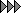

过程: 了解大变形分析
“关闭窗口”(Close Window)
 “拭除未显示的”(Erase Not Displayed)
“拭除未显示的”(Erase Not Displayed) 
 Simulate_Analysis\UnderstandLDA
Simulate_Analysis\UnderstandLDA
 VESSEL_SIMULATE.PRT
VESSEL_SIMULATE.PRT
|
|
||
 |
Creo Parametric 用户打开 VESSEL.PRT | |
|
|
||
-
任务 1. 向模型分配材料属性。
1. 在功能区中，选择“主页”(Home) 选项卡。
2. 在“材料”(Material) 组中单击“材料”(Materials) 。将出现“材料”(Materials) 对话框。
3. 从材料列表中选择 pvc.mtl，然后单击“添加材料”(Add Material) 。
4. 单击“确定”(OK)。
5. 在“材料”(Material) 组中单击“材料分配”(Material Assignment)
 。将出现“材料分配”(Material Assignment) 对话框。
。将出现“材料分配”(Material Assignment) 对话框。
6. 校验“零件:VESSEL”(Part:VESSEL) 已在“参考”(References) 部分列出，并且 PVC 作为材料在“属性”(Properties) 部分列出。
7. 单击“确定”(OK)。
-
任务 2. 调查在模型中定义的载荷和约束。
1. 在模型树中，展开“载荷/约束”(Loads/Constraints)。
2. 展开约束集 ConstraintSet1。请注意，在这个集中有两个约束。
3. 选择每个约束并注意在模型中突出显示的特征。在这种情况下，我们将为了对称目的而切割几何。约束 3 正在模拟缺少的几何。位于容器顶部的 Constraint5 将模拟真实的约束。
4. 在模型树中，展开载荷集 LoadSet1。
5. 右键单击 Load1，然后选择“编辑定义”(Edit Definition)。“压力载荷”(Pressure Load) 对话框随即出现。
6. 请注意，已将 1.0 MPa 值分配给在模型中显示为绿色的曲面。
7. 单击“确定”(OK)。
-
任务 3. 定义 AutoGEM 控制用于网格细化。
1. 在功能区中，选择“精细模型”(Refine Model) 选项卡。
2. 在 AutoGEM 组的“控制”(Control) 类型下拉菜单中单击“最大元素尺寸”(Maximum Element Size)
 ，然后单击“薄实体”(Thin Solid) > “检测薄实体”(Detect Thin Solids)。“自动检测薄实体”(Auto Detect Thin Solids) 对话框随即出现。
，然后单击“薄实体”(Thin Solid) > “检测薄实体”(Detect Thin Solids)。“自动检测薄实体”(Auto Detect Thin Solids) 对话框随即出现。
3. 校验“使用几何分析”(Use Geometry Analysis) 已被选中。
4. 在“特征厚度”(Characteristic Thickness) 字段中键入 3.0。
5. 单击“开始”(Start)。
6. 在模型树中，展开“AutoGEM 控制”(AutoGEM Controls)。校验十个控制均已列出。
7. 从 AutoGEM 组中的AutoGEM
 下拉菜单中单击“设置”(Settings)。“AutoGEM 设置”(AutoGEM Settings) 对话框随即出现。
下拉菜单中单击“设置”(Settings)。“AutoGEM 设置”(AutoGEM Settings) 对话框随即出现。
8. 选择“设置”(Settings) 选项卡。
9. 在“元素类型”(Element Types) 部分中，从“实体”(Solids) 下拉列表中选择“砖，楔，四面体”(Brick, Wedge, Tetra)。
10. 单击“确定”(OK)。
11. 在功能区中，选择“精细模型”(Refine Model) 选项卡。
12. 从 AutoGEM 组中单击AutoGEM
。将出现 AutoGEM 对话框。
13. 保留所有默认设置并单击“创建”(Create)。模型已网格化，如图所示。
14. 在“AutoGEM 摘要”(AutoGEM Summary) 对话框中，单击“关闭”(Close)。
15. 在“诊断：AutoGEM 网格”(Diagnostics:AutoGEM Mesh) 对话框中，单击“关闭”(Close)。
16. 在 AutoGEM 对话框中，单击“关闭”(Close)。提示保存网格时单击“否”(No)。

-
任务 4. 为模型定义和运行静态分析。
1. 在功能区中，选择“主页”(Home) 选项卡。
2. 在“运行”(Run) 组中单击“分析和研究”(Analyses and Studies)
 。将出现“分析和设计研究”(Analyses and Design Studies) 对话框。
。将出现“分析和设计研究”(Analyses and Design Studies) 对话框。
3. 单击“文件”(File) > “新建静态分析”(New Static)。将出现“静态分析定义”(Static Analysis Definition) 对话框。
4. 完成以下步骤：
- 在“名称”(Name) 字段中键入 Vessel_SDA。
- 选择显示在“约束集/元件”(Constraint Set/Component) 和“载荷集/元件”(Load Set/Component) 部分中的约束集和载荷集。
- 选择“收敛”(Convergence) 选项卡。将默认的“单通道自适应”(Single-Pass Adaptive) 方法保持为选定状态。
5. 单击“确定”(OK) 返回到“分析和设计研究”(Analyses and Design Studies) 对话框。
6. 选择 Vessel_SDA，然后单击“复制”(Copy)
 。已列出新的分析，标题为 Copy_of_Vessel_SDA。
。已列出新的分析，标题为 Copy_of_Vessel_SDA。
7. 选择已复制的分析并单击“编辑”(Edit) > “分析/研究”(Analysis/Study)。将出现“静态分析定义”(Static Analysis Definition) 对话框。
8. 完成以下步骤：
- 在“名称”(Name) 字段中键入 Vessel_LDA。
- 选中“非线性/使用载荷历史”(Nonlinear/Use Load Histories)。
- 在“非线性选项”(Nonlinear Options) 部分，选中“计算大变形”(Calculate Large Deformations)。
- 选择“输出”(Output) 选项卡。在“绘制栅格”(Plotting Grid) 字段中键入 8。
- 从“输出步长”(Output Steps) 下拉列表中选择“用户定义的输出步长”(User-defined Output Steps)。
- 在“主步长数”(Number of Master Steps) 字段中键入 8。
- 单击“用户定义的步长”(User-defined Steps)，然后完成字段，如图所示。手动将间隔距离定为 0、0.05、0.1、0.2、0.4、0.6、0.8 和 1.0。
9. 单击“确定”(OK) 返回到“分析和设计研究”(Analyses and Design Studies) 对话框。
10. 单击“配置运行设置”(Configure Run Settings)
 。将出现“运行设置”(Run Settings) 对话框。
。将出现“运行设置”(Run Settings) 对话框。
11. 默认情况下，结果和临时输出目录被设置在工作目录中。两种分析都储存在此位置。单击“确定”(OK)。
12. 在“分析和设计研究”(Analyses and Design Studies) 对话框中选择 Vessel_SDA，然后单击“开始运行”(Start Run)
 。单击“是”(Yes) 以运行交互诊断。
。单击“是”(Yes) 以运行交互诊断。
13. 分析完成后，单击“显示研究状况”(Display Study Status)
 查看汇总报告。
查看汇总报告。
在汇总报告中，检查最大变形和 von Mises 应力。记录这些值。
14. 关闭所有对话框并返回至“分析和设计研究”(Analyses and Design Studies) 对话框。
15. 选择 Vessel_LDA，然后单击“开始运行”(Start Run)
。单击“是”(Yes) 以运行交互诊断。
16. 分析完成后，单击“显示研究状况”(Display Study Status)
查看汇总报告。
在研究汇总报告中，检查最大变形和 von Mises 应力。记录这些值。将值和 SDA 研究做比较。 - 请注意，这些数量中的每一个的大小都各不相同。
- 请注意，Creo Simulate 在 Vessel_LDA 研究的实例中计算了不同的合成载荷。
17. 关闭所有对话框并返回到 Creo Simulate 窗口。
过程就此结束。